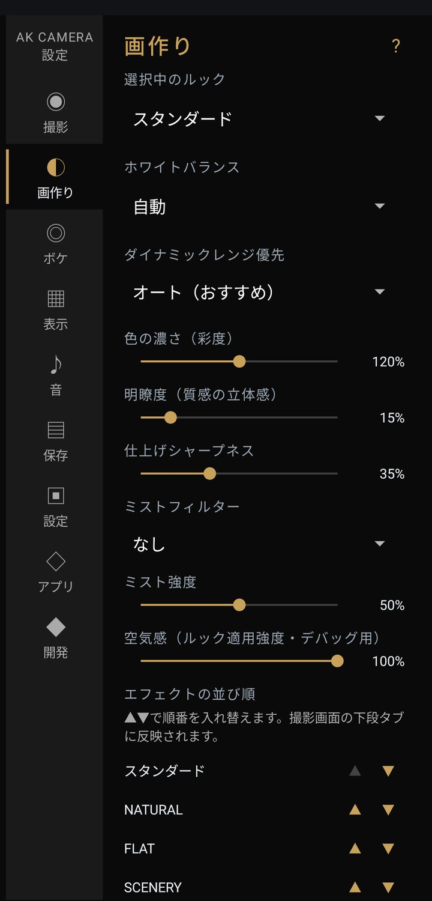

設定：画作り

撮った写真をどう仕上げるか。色・明暗・質感。
- 選択中のルック初期値 スタンダード
- 撮影画面のルックと同じです（21種類）。
- ホワイトバランス初期値 自動
- 自動 / 晴天 / 曇天 / 日陰 / 電球 / 蛍光灯 電球色の照明で全体がオレンジに寄るなら「電球」、日陰で青っぽくなるなら「日陰」を試してください。
- ダイナミックレンジ優先初期値 オート
- オート（おすすめ） / オフ / 通常 / 通常〜強調の間 / かなり強め 白飛びや黒つぶれしそうなところを、どれだけ押さえ込むか。オートは写真ごとの明暗を見て強さを決めます。強くするほど明るいところも暗いところも残りやすくなり、見た目は平たくなっていきます。
- 色の濃さ（彩度）初期値 120%
- 50〜150%。全部のルックにまとめて効きます。「どのルックでも色が濃すぎる」と感じたら、ここを下げてください。撮影画面ではプロ表示のときだけ出ます。
- 明瞭度（質感の立体感）初期値 15
- 撮影画面の「仕上げ」と同じ値です（撮影画面では 15 を ±0 として表示します）。
- 仕上げシャープネス初期値 35
- 撮影画面の「仕上げ」と同じ値です（撮影画面では 35 を ±0 として表示します）。
- ミストフィルター初期値 なし ／ ミスト強度初期値 50
- ブラックミストは明るいところだけを大きくにじませて、光源のまわりがふわっと光ります。細部はそのまま残ります。 ホワイトミストは画面全体に薄いベールを掛け、コントラストが下がって柔らかい写りになります。夜の街灯やイルミネーションで試すと違いが分かりやすいです。
- 空気感（ルック適用強度）初期値 100
- 撮影画面の「ルックの効き」と同じ値です。
- エフェクトの並び順
- ▲▼でルックの並び順を入れ替えます。よく使うルックを前へ。
- ルックの表示・非表示
- 使わないルックを隠せます。左右に払って送るときの一周が短くなります。